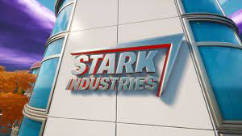

About Us

Stark Tech Group is a leader in facility optimization, aligning technology with real-world experience across a diverse portfolio of capabilities. We are a single agent source for Building Automation, Intelligence & Equipment offering a unique customer experience throughout the building lifecycle. We are a collaborative, cross-functional team working together to provide integrative, cost-effective solutions with in-house expertise for any type of building, portfolio or project.
“The level of coordination, scheduling and cost control laid out by Stark in our custom retrofit, made them the easy decision for our project.” – Large Hospital System, Buffalo NY
Stark Equipment creates customized equipment selections and offers lifecycle services for HVAC, Power & Industrial Combustion applications. The group’s heritage leverages leading manufacturer partnerships that span across the electrical and mechanical disciplines.
“The level of coordination, scheduling and cost control laid out by Stark in our custom retrofit, made them the easy decision for our project.” – Large Hospital System, Buffalo NY
Stark Equipment creates customized equipment selections and offers lifecycle services for HVAC, Power & Industrial Combustion applications. The group’s heritage leverages leading manufacturer partnerships that span across the electrical and mechanical disciplines.